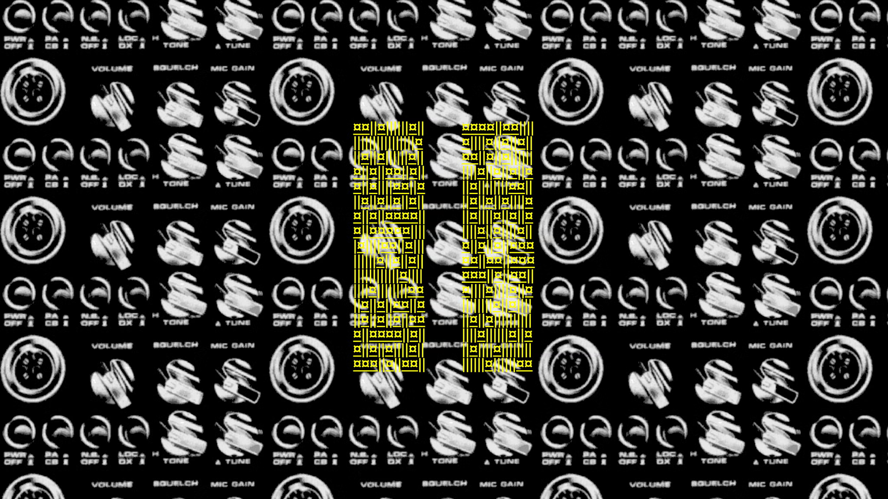

The concept and thought of my exhibition is that I would want to present samples and descriptions of net arts that provide an impression of a story behind the work. There are plenty of net art stories out there on the internet, but I would like to be able to post ones that are not necessarily my favorite, but ones that show different time periods, as all three net arts that I chose were created at different times. I also wish to include more interactive net arts, because interactivity does to me make the user feel more a part of it, engage more with it. If you're clicking your way through something, deciding on things, finding things out about a narrative for yourself, it doesn't really feel like you're gazing upon art—you feel you're inside it. That's more involvement with emotions, the stronger the connection gets and how finely the stories slice. That draws the viewer closer and results in a deeper personal, something that is remembered for longer.